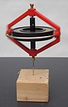

angular_momentum

Definition: In physics, angular momentum (sometimes called moment of momentum or rotational momentum) is the rotational analog of linear momentum. It is an important physical quantity because it is a conserved quantity – the total angular momentum of a closed system remains constant. Angular momentum has both a direction and a magnitude, and both are conserved. Bicycles and motorcycles, flying discs, rifled bullets, and gyroscopes owe their useful properties to conservation of angular momentum. Conservation of angular momentum is also why hurricanes form spirals and neutron stars have high rotational rates. In general, conservation limits the possible motion of a system, but it does not uniquely determine it.
Source: Wikipedia
Wikipedia Page
Wikidata Page